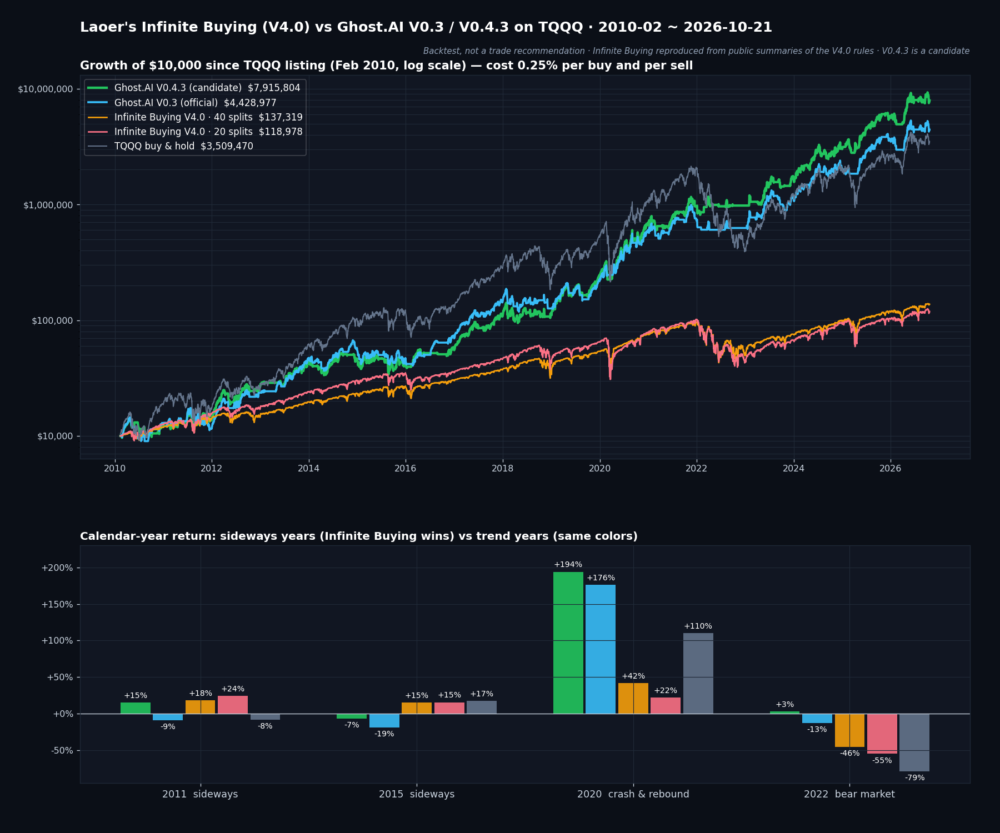

라오어 무한매수법과 직접 비교했습니다: TQQQ 16년 백테스트
· Ghost.AI 특집
👻 매일 시그널과 히스토리를 홈페이지에서 한눈에 → www.ghostai.co.kr
TQQQ에 투자한다면 한 번쯤 들어 봤을 라오어의 「무한매수법」은 국내에서 가장 널리 알려진 TQQQ 분할 매수 방법입니다. 이번 특집에서는 현행 V4.0 규칙을 공개된 해설대로 재현해, Ghost.AI 전략 V0.3(운영 중)·V0.4.3(관찰 중)과 TQQQ 상장일(2010년 2월)부터 같은 조건으로 비교했습니다.
무한매수법은 어떤 방법인가
- 라오어(필명)가 2021년 책 「라오어의 미국주식 무한매수법」과 네이버 카페를 통해 알린 방법입니다. 2021년 V2.0부터 여러 번 개정됐고, 2026년 3월 공개된 V4.0이 현행입니다.
- 원금을 20~40번으로 나눠 매일 조금씩 삽니다. 평단보다 쌀 때는 더 사고, 비쌀 때는 덜 삽니다.
- 평단보다 일정 수준 오르면 팔아 한 사이클을 끝내고 처음부터 다시 시작합니다. 원금을 다 쓴 뒤에도 내리면 조금씩 손절하며 다시 사들이는 단계(리버스 모드)로 넘어갑니다.
- 방향을 맞히려 하지 않고 TQQQ의 큰 출렁임을 이용한다는 것이 설계 의도입니다.
비교 방법 — 같은 원금, 같은 조건
- 무한매수법: V4.0 40분할(기본)과 20분할(공격형). 공개된 해설을 바탕으로 재현했으며, 원문 규칙·실제 성과와 다를 수 있습니다.
- 비용: 매수·매도 각각 거래 금액의 0.25%를 뺐습니다. 세금은 제외, 현금 구간 수익은 0으로 계산했습니다.
- 수익률 기준: 모두 전체 원금 대비입니다. 무한매수법은 원금의 일부만 주식에 넣는 설계라 이 점이 결과에 크게 작용합니다.
- 기간: 2010년 2월 11일(TQQQ 상장일) ~ 2026년 10월 21일.
- Ghost.AI 전략은 AI 모델 신호로 움직이며, 매매 규칙은 공개하지 않습니다.
결과 — 16년 동안 차이는 이만큼 벌어졌습니다

위: 2010년 2월에 1만 달러로 시작했을 때의 자산(로그 눈금, 비용 반영). 아래: 무한매수법이 이긴 횡보장(2011·2015)과 Ghost.AI가 이긴 해(2020·2022)의 연 수익률. 초록 = V0.4.3, 하늘색 = V0.3, 주황 = 무한매수 40분할, 분홍 = 무한매수 20분할, 회색 = TQQQ 단순 보유.
2010년 2월 ~ 2026년 10월 (비용 반영)
| V0.4.3 | V0.3 | 무한매수 40분할 | 무한매수 20분할 | TQQQ 보유 | |
|---|---|---|---|---|---|
| 연평균 수익률 | +49.2% | +44.1% | +17.0% | +16.0% | +42.1% |
| 최대 낙폭 | −34.6% | −39.8% | −55.5% | −61.4% | −81.8% |
| 칼마 비율 | 1.42 | 1.11 | 0.31 | 0.26 | 0.51 |
| 최악 연도 | −6.6% | −19.1% | −45.5% | −55.1% | −79.2% |
| 평균 주식 비중 | 60% | 64% | 32% | 37% | 100% |
| 1만 달러 → | 792만 달러 | 443만 달러 | 13.7만 달러 | 11.9만 달러 | 351만 달러 |
칼마 비율 = 연평균 수익률 ÷ 최대 낙폭 (클수록 낙폭 대비 수익이 큼).
구간별 연평균 / 최대 낙폭
| 구간 | V0.4.3 | V0.3 | 무한매수 40분할 | 무한매수 20분할 | TQQQ 보유 |
|---|---|---|---|---|---|
| 2010~2018 | +31.2% / −34.6% | +33.0% / −39.8% | +15.8% / −32.5% | +18.3% / −38.0% | +41.9% / −58.1% |
| 2019~ | +72.6% / −30.5% | +57.7% / −39.1% | +18.4% / −55.5% | +13.4% / −61.4% | +42.3% / −81.8% |
| 2025~ | +70.8% / −23.4% | +56.5% / −28.2% | +20.6% / −33.9% | +14.9% / −40.7% | +40.0% / −57.0% |
| (참고) 2000년 3월~, 가상 TQQQ | +34.2% / −45.5% | +20.8% / −80.0% | −5.8% / −99.4% | −5.3% / −99.2% | −3.2% / −100% |
가상 TQQQ = TQQQ 상장 전 나스닥 100 하루 등락의 3배에서 보수와 차입 비용을 뺀 값. 무한매수법은 2000년 3월 닷컴 고점에서 시작하면 2002년까지 원금 대부분을 잃었습니다.
차이가 난 이유
- 상승장에서는 주식 비중이 낮습니다. 무한매수법은 평균적으로 원금의 3분의 1 정도만 TQQQ에 들어가 있었습니다. TQQQ가 140% 오른 2013년에 무한매수법은 32~38%, 118% 오른 2017년에는 24~30%였습니다.
- 긴 하락장에서는 끝까지 사들인 뒤 손절로 끝납니다. 하락이 1년 내내 이어진 2022년에 무한매수법은 −46%(40분할)·−55%(20분할)였습니다. 같은 해 V0.3은 −13%, V0.4.3은 +3%였습니다.
무한매수법이 앞선 곳
- 횡보장에서는 무한매수법이 이겼습니다. 2011년 무한매수법 +18~24%(V0.3 −9%, V0.4.3 +15%), 2015년 +15%(V0.3 −19%, V0.4.3 −7%). 평단 아래에서 사고 평단 위에서 파는 구조가 오르내리며 제자리인 장에서 수익을 냅니다.
- 2010~2018년 최대 낙폭은 40분할이 −32.5%로 가장 얕았습니다. 다만 같은 구간 연평균은 15.8%로 V0.4.3(31.2%)의 절반이었습니다.
- 방향을 예측하지 않아도 되고, 규칙이 공개돼 있어 누구나 따라 할 수 있습니다. Ghost.AI 전략은 매수와 매도를 합쳐 V0.3이 1년에 10회, V0.4.3이 18회 정도 매매합니다.
꼭 함께 봐야 할 점
- 백테스트는 실제 수익이 아닙니다. 세금은 넣지 않았습니다.
- 무한매수법은 공개된 해설을 바탕으로 재현했습니다. 주식을 정수 단위로 사는 점, 프리·애프터장의 지정가 체결은 반영하지 않았습니다. 원문 규칙은 라오어 카페에서 확인할 수 있습니다.
- Ghost.AI 전략의 수치는 실제보다 좋게 나왔을 수 있습니다. 매매 규칙을 전체 기간의 데이터를 보고 정했기 때문입니다. 2018년까지의 데이터로만 규칙을 다시 고른 검증에서 2019년 이후 연평균은 V0.3 48%, V0.4.3 64%(매매 비용 제외)였습니다.
- V0.4.3은 아직 후보입니다. 2026년 10월 20일부터 실제 매매 없이 기록만 하고 있으며, 운영 전략과 실계좌는 V0.3을 따릅니다.
참고: 라오어, 「라오어의 미국주식 무한매수법」(2021) · 무한매수법 V4.0 일반모드·리버스모드 해설 — quantstack
백테스트만 믿지 마시고, 실시간 기록을 직접 확인하세요
Ghost.AI는 전략의 신호를 매일 장 마감 후 홈페이지에 공개하고, 지난 신호는 고치거나 지우지 않고 그대로 쌓아 둡니다. 오늘의 신호, 지금까지의 모든 신호 기록, 이 글의 백테스트와 다른 특집까지 전부 홈페이지에서 무료로 볼 수 있습니다.
👻 모든 신호 기록이 공개된 Ghost.AI 홈페이지 → www.ghostai.co.kr
Ghost.AI — Quantitative AI Investment
Model: DeepGhost v0.3 | Transformer-Based Deep Learning
Coverage: 14 tickers | Updated every trading day after US market close
⚠️ 본 자료는 정보 제공 목적으로만 작성되었으며 투자 권유가 아닙니다. 모든 투자의 책임은 투자자 본인에게 있습니다. 과거 성과가 미래 수익을 보장하지 않습니다.
[유의사항]
- 본 서비스는 불특정 다수를 대상으로 발행되는 단방향 정보 제공 서비스이며, 투자자 개인의 재산 상황·투자 목적·위험 선호도를 반영한 개별 투자 조언이 아닙니다.
- 고스트에이아이 주식회사는 고객과 쌍방향 의사소통(개별 상담, 맞춤형 자문 등)을 제공하지 않습니다.
- 본 콘텐츠는 투자 권유 또는 매매 주문의 청약·청약의 권유에 해당하지 않으며, 최종 투자 판단 및 그에 따른 손익의 책임은 전적으로 투자자 본인에게 있습니다.
고스트에이아이 주식회사